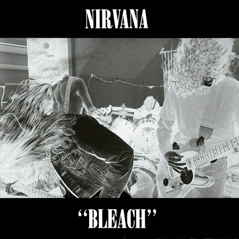

Bleach
트랙리스트-
1. Blew
2. Floyd the Barber
3. About a Girl
4. School
5. Love Buzz
6. Paper Cuts
7. Negative Creep
8. Scoff
9. Swap Meet
10. Mr. Moustache
11. Sifting
12. Big Cheese
13. Downer
발매일: 1989년 6월 15일, 재생시간: 37:19
클릭 시 유튜브 이동